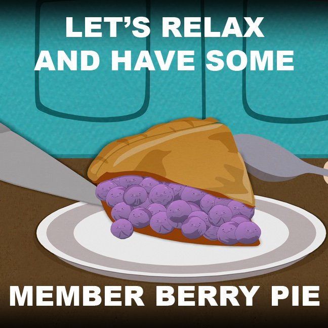

Member Berry Pie

Description
Do you ever find yourself wishing for the days of your past?! Well here is the solution for you! Member Berries are the finest source of 'Membering
the good ol days! Just follow this simple recipe and you'll have the tastiest pie anyone has ever eaten!
Ingredients
- 2 Bunches of Member Berries
- 1/4 Cup of Milk
- 1 Stick of Butter
- Pie Crust
- Tegridy Farm's Special Tincture
- Good 'ol Tegridy
Instructions
- Harvest your member berries and pick only the finest ones
- Consume a little Tegridy Farm's Special Tincture
- Put whole berries into pie crust and fashion into Pie
- Cover with more Tegridy Farms
- Preheat Oven to 350 degrees and bake pie until outside is brown
- Let it sit out until cooled, member the good 'ol timesm and enjoy!